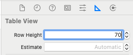

En esta sesión hablaremos de los patrones de diseño que Apple nos recomienda seguir para nuestras aplicaciones. En algunos casos es obligatorio cumplir estos patrones a la hora de diseñar nuestras aplicaciones y el hecho de no hacerlo puede ser motivo de rechazo para publicar en el App Store. Comentaremos las distintas características de cada dispositivo iOS. Por último detallaremos distintas técnicas que existen para personalizar los controladores y vistas más usadas y, de esta forma, conseguir un aspecto más atractivo para el usuario final.
Guías de estilo en iOS
Tanto el iPhone como el iPad supusieron un revolucionario giro en cuanto a diseño de interfaz. Para evitar el caos a la hora de diseñar cualquier tipo de aplicación, tras cada actualización de iOS Apple plantea una serie de guías de estilo que todo desarrollador debe seguir en la medida de lo posible para diseñar una app. Estas guias de estilo no se aplican, como es lógico, a la hora de diseñar la interfaz de un juego, pero son muy útiles para crear aplicaciones.
En esta sesión vamos a aprender a diseñar apps para iPhone / iPad que sean usables, accesibles y en las que el usuario perciba una buena experiencia de uso. Hay que tener en cuenta que un usuario de iOS está habituado a una serie de elementos y situaciones básicas, como la navegación dentro de vistas mediante Navigation Controllers, navegación por las opciones fundamentales mediante los Tab Bar Controllers, uso de botones, etc. Aquí haremos un resumen de todo lo que Apple propone en sus guias de estilo. En esta asignatura nos centraremos en los aspectos principales de la guía, aunque es recomendable leer por completo las guías de estilo tras cada actualización de iOS, ya que las guías cambian mucho de un año para otro.
Además de la guía de estilo oficial, conviene consultar detalladamente este enlace:
Veremos 3 puntos principales:
- Principios de diseño
- Características de la plataforma iOS
- Guías de uso de las principales tecnologías disponibles en iOS
Principios de diseño
Apple recomienda diseñar apps siguiendo estos principios:
- Claridad. En nuestras apps el texto debe poder ser legible a cualquier tamaño, los iconos deben ser precisos y claros, los adornos poco recargados y apropiados, y debemos centrarnos principalmente en la funcionalidad. Los espacios negativos, colores, fuentes, gráficos y elementos del interfaz deben resaltar el contenido que es importante y facilitar la interactividad.
- Amigabilidad. Un interfaz fluido, claro y visualmente atractivo ayuda a los usuarios a entender e interactuar con el contenido, que normalmente ocupa la pantalla completa. Es importante mantener el interfaz ligero y claro para que el contenido destaque mejor.
- Profundidad. Las distintas capas visuales y el movimiento realista deben facilitar la comprensión de la jerarquía del interfaz e imprimir dinamismo. Tocar y descubrir mejora la sensación de interacción y permite el acceso a funcionalidades y contenidos adicionales sin perder el contexto. Las transiciones proporcionan una sensación de profundidad mientras se navega por el contenido.
En general, lo principal que deben tener las aplicaciones es:
- Integridad estética: debemos integrar adecuadamente el aspecto visual con su funcionalidad.
- Consistencia: deben usarse elementos estándar a los que ya están habituados los usuarios de iOS y un diseño uniforme durante toda la app.
- Adaptabilidad: es muy recomendable que el contenido de la pantalla cambie cuando se rota el dispositivo o se usan gestos. Las vistas deben adaptarse a cambios de orientación de dispositivo, modo oscuro (dark mode) y tipos dinámicos, dejando que los usuarios elijan las configuraciones que prefieran desde la configuración general del dispositivo.
- Feedback: se deben confirmar las acciones y mostrar resultados para informar al usuario de que ha interactuado con nuestra app.
Antes de comenzar a diseñar una app también es muy importante conocer quiénes son los usuarios a los que nos dirigimos, es decir, el público objetivo, y en función de esto definir la interfaz gráfica, los controles, terminología, etc. No es lo mismo diseñar una app para niños que una de contabilidad, o una app para empresas.
Se recomienda hacer un diseño previo usando Mockups, o bien usando storyboards u otras herramientas antes de que la app sea funcional. Existen varios programas para Mockups, tales como mockup.io o Balsamiq.
La aplicación que diseñes debe estar totalmente adaptada a un dispositivo iOS, no a otro tipo ni a web. El usuario lo agradecerá (y Apple, cuando lo revise, también). La inmensa mayoria de usuarios de iOS están acostumbrados al uso de botones, barras de navegación, Tab Bars, etc. Debemos, en la medida de lo posible, hacer uso de toda esta serie de componentes que son diseñados de forma específica para dispositivos iOS y con los que los usuarios están muy familiarizados.
En este enlace se pueden ver todos los componentes que podemos usar en nuestras apps. Se dividen en:
- Contenido. Estos componentes sirven para mostrar gráficos, texto, imágenes, o contenidos web.
- Distribución y organización. Elementos como las colecciones, tablas o etiquetas pueden usarse para organizar y mostrar los datos.
- Menús y acciones. Para interaccionar con el usuario disponemos de botones, menús o pop-ups, entre otros.
- Navegación y búsqueda. El usuario puede moverse por nuestra app usando barras de navegación, tab bars o usando campos de búsqueda, entre otros.
- Presentación. Para presentar los datos podemos usar alertas, controles de página, popovers, vistas de scroll, etc.
- Selección y entradas. Entre otros, se pueden elegir valores de una lista con pickers, usando segmented controls, o emplear sliders para valores numéricos.
- Estado. El estado de una tarea se puede medir con barras de progreso, anillos de actividad o medidores (gauges).
- Experiencias del sistema. El usuario puede recibir notificaciones, puede ver la barra de estado de la app, usar widgets, etc.
Todos los componentes pueden consultarse con más detalle en la referencia del catálogo de UIKit.
Es importante que las aplicaciones funcionen correctamente en todos los dispositivos que puedan usarlas. También hay que asegurarse antes de publicar en App Store de que no hay bugs, ya que si estos existen Apple puede rechazar la aplicación, o si aparecen después los usuarios podrían puntuarla mal o deje de usarla. Existen una serie de puntos a tener en cuenta en este caso:
- Hay que diseñar cada aplicación según el dispositivo en el que se use teniendo en cuenta especialmente las capas de vistas, ya que estas pueden cambiar bastante en función del tamaño de pantalla disponible.
- Se debe de adaptar todo el arte (imágenes, videos, etc.) al dispositivo adecuado. Para esto se usan los Assets. En las últimas versiones de iOS, se recomienda usar ficheros PDF en los Assets, ya que se adaptarán a cualquier tamaño.
- Las características de la aplicación deben conservarse a pesar del tipo de dispositivo que se use.
- Cuando sea posible, es conveniente diseñar las apps para que funcionen en todos los dispositivos Apple (iOS, iPadOS, watchOS, tvOS y macOS).
Características principales de la plataforma iOS
La pantalla
Todo usuario que usa una aplicación interactúa mediante la pantalla. Existen distintas resoluciones de pantalla (a nivel de desarrollo de código y a nivel físico) según cada dispositivo. Se pueden consultar consejos de diseño y la resolución de todos los modelos de Apple en este enlace.
Es importante resaltar que el tamaño en puntos no es el mismo que el tamaño en píxeles, que normalmente es un múltiplo (2x, 3x) de los puntos, como puede verse en el siguiente ejemplo:
Detección de contacto (touch events). El tamaño de la zona mínima para que el evento de contacto funcione correctamente debe de ser de al menos 44 x 44 puntos.
Dada la diferencia de resolución entre los distintos dispositivos de Apple, se recomienda usar siempre autolayout o SwiftUI en lugar de indicar explícitamente coordenadas de la pantalla para colocar los componentes.
SwiftUI es el nuevo sistema de Apple para el desarrollo de interfaces. Tiene como principal ventaja sobre el sistema tradicional (UIKit) que se ahorra código (usa sintaxis declarativa) y facilita que la app funcione correctamente en todos los dispositivos mejorando el autolayout de UIKit. Sin embargo, en esta asignatura todavía no introduciremos este entorno porque es muy nuevo, todavía tiene bugs y está sujeto a bastantes cambios que pueden hacer que las apps no compilen correctamente en pocos meses. Si quieres más información sobre swiftUI puedes consultar este enlace.
Orientación del dispositivo
Uno de los requisitos a la hora de publicar una aplicación de iPhone/iPad en el App Store es la compatibilidad con las distintas orientaciones que puede adoptar el dispositivo iOS, tanto vertical (portrait) como horizontal (landscape). Cualquier aplicación debe estar adaptada a ambas posiciones para mejorar la usabilidad. La programación de la orientación en una aplicación iOS es relativamente sencilla (excepto en casos puntuales) y no implementarla puede suponer, como hemos comentado, el rechazo de su publicación en el App Store.
A continuación puedes ver orientaciones de ejemplo para un iPhone y su layout:
Y para el iPad:
Storyboards
Debemos diseñar un Main.storyboard para nuestra app. Para la pantalla de inicio que se muestra brevemente al arrancar la aplicación, a veces interesa hacer otro storyboard adicional (LaunchScreen.storyboard) cuando el proceso de carga de la app es lento. Las nuevas apps basadas en SwiftUI no necesitan storyboards.
Gestos
Llamamos gestos a los distintos movimientos que hace el usuario sobre la pantalla para realizar acciones. En la sesión sobre multitouch veremos en detalle cómo gestionar los gestos.
Ayuda
Una aplicación debe ser lo suficientemente simple e intuitiva para que el usuario sepa usarla. Hay que tener en cuenta que el usuario no tendrá tiempo ni ganas de estar leyendo la ayuda la primera vez que usa la aplicación. Por tanto, lo ideal es que no sea necesario ningún texto de ayuda, pero si existe debe ser lo más claro y compacto posible, y si se pueden utilizar imágenes o videos, mejor.
Sonidos
A veces nos interesa reproducir sonidos en nuestra app, bien porque sea necesario o para producir un efecto agradable en el usuario. Para evitar justamente lo contrario, hay que tener en cuenta que:
- Si el usuario activa el modo silencio en el dispositivo, este no debe de emitir ningún tipo de sonido. Hay apps que se saltan esto, y suele ser algo bastante molesto. Si nuestra app se basa completamente en el sonido (por ejemplo, un reproductor musical) puede que tengamos que hacer alguna acción (como por ejemplo pausar la música) cuando se silencie el móvil.
- El tipo de sonido escogido para las distintas características de la aplicación es muy importante. Estos sonidos deben ser adecuados y se deben ajustar al tipo de acción que se esté ejecutando.
- Hay que tener también en cuenta la gestión de las interrupciones de audio. Por ejemplo, puede producirse una llamada entrante, la aplicación pasar a estado inactivo (background), etc.
- Si estamos desarrollando una aplicación musical, para mejorar la experiencia de usuario también podemos usar el control remoto de Apple o el sistema AirPlay.
Accesibilidad
iOS ofrece funcionalidades de accesibilidad para usuarios con discapacidades visuales o auditivas. Con poco esfuerzo y usando los componentes de UIKit podemos adaptar nuestra app para que todos los usuarios puedan usarla. Para esto se recomienda:
- Proporcionar etiquetas de texto alternativas para imágenes, iconos y elementos del interfaz. Estas etiquetas alternativas no serán visibles en la pantalla, pero permitirán al sistema de voz (VoiceOver) describir qué hay en la pantalla, ayudando a las personas con problemas visuales.
- Responder a las opciones de accesibilidad. Debemos permitir a UIKit implementar su interfaz de usuario, para que los elementos se adapten a las preferencias de accesibilidad como texto en negrita o más grande, o eliminar animaciones. Debemos usar la fuente de texto del sistema cuando sea posible.
- Probar la app en modo accesible, para ver cómo queda.
- Usar suficiente contraste para que los iconos y el texto sean fácilmente distinguibles.
Carga
Si usamos una pantalla estática mientras se está cargando contenido, puede parecer que la app se haya bloqueado. En lugar de esto, hay que dejar claro que la carga está en marcha, por ejemplo usando barras de progreso o animaciones.
Preferencias
Si la aplicación utiliza preferencias propias, podemos hacer una vista para ellas dentro de nuestra aplicación en el caso de que el usuario necesite cambiarlas con frecuencia, o bien añadir un settings bundle si el cambio no es tan frecuente. Un settings bundle contiene ficheros (principalmente .plist) que describen la estructura y estilo de presentación de las preferencias, y es muy sencillo de implementar. La app Settings usa esta información para crear una entrada para nuestra aplicación y mostrar las preferencias.
Guías de uso de las principales tecnologías disponibles en iOS
La API de iOS nos da acceso a múltiples tecnologías nativas que se describen a continuación:
Multitarea
Mediante la multitarea nuestro dispositivo puede ejecutar más de dos aplicaciones al mismo tiempo. Otras tareas que no estén mostrándose en pantalla pueden estar guardadas en memoria (en background) o también mostrándose simultáneamente en la pantalla. Apple recomienda que nuestra aplicación tenga en cuenta dicha característica ya que de esta forma el usuario puede estar realizando otras tareas al mismo tiempo sin necesidad de cerrarla.
La aplicación debe estar preparada para gestionar interrupciones de audio en cualquier momento, pararse y reiniciarse sin ninguna complicación ni lag y de forma "suave", y debe comportarse de forma adecuada cuando se encuentra en background. La multitarea es una tecnología que se utiliza muy a menudo en iOS y es por ello que debemos tenerla presente cuando diseñamos nuestras aplicaciones. La gestión del paso de un estado activo a inactivo debe programarse cuando sea necesario. Por ejemplo, hay que tener en cuenta que nuestro juego Angry Birds puede interrumpirse por una llamada a mitad del lanzamiento de un pájaro.
Para determinar el comportamiento de nuestra aplicación cuando entra en modo background podemos implementar métodos que se verán en otras asignaturas del máster.
Además de tener que estar preparados para interrupciones, la multitarea implica que nuestra app puede ejecutarse sólo en una zona de la pantalla, por lo que hay que tener en cuenta esto en la fase de diseño.
Notificaciones
Las notificaciones push permiten avisar a los usuarios independientemente de si la aplicación está funcionando en ese momento. Esto es muy útil en apps que usen un calendario, para avisar de eventos futuros, o para algún tipo de recordatorio. También se utiliza muy a menudo en juegos.

Se pueden enviar notificaciones usando un servidor propio, o bien generarlas localmente desde nuestra app. En el caso de requerir un servidor también se pueden contratar servicios externos que realicen esa tarea de forma bastante económica.
Extensiones
Con las extensiones los usuarios pueden usar un componente desarrollado por nosotros desde una app externa. Por ejemplo, mientras un usuario ve una página web con Safari, podría usar nuestras extensiones para enviar una imagen o un artículo a nuestra red social. O podría también usar desde la aplicación de fotos de Apple una extensión nuestra para editar la imagen.
Las extensiones pueden ser de tipo widget, para realizar acciones desde el notification center, share para compartir contenido con terceros, action para ver contenido desde otra aplicación, photo editing para editar imágenes, o custom keyboard para reemplazar el teclado de iOS por uno personalizado, entre otras posibilidades.

Básicamente estos son los conceptos principales de la guía de estilo de Apple, aunque hay más tecnologías que pueden verse en su guía de estilo.
Ejercicios
A continuación vamos a empezar programando ejemplos de personalización de controladores. Llamaremos personalizaciones a las modificaciones sobre el aspecto visual de los componentes estándar de Apple. Normalmente las personalizaciones no son recomendables para no confundir al usuario, pero a veces son necesarias para juegos o aplicaciones que requieran un aspecto diferente, como puede verse en el siguiente ejemplo:

Ejercicio 1- Personalización de celdas
La captura siguiente muestra un ejemplo de una tabla con las celdas totalmente personalizadas.
A diferencia de la personalización de otros componentes, la personalización de celdas de una tabla es algo muy habitual en iOS. De esta forma podemos hacer que nuestras tablas se distingan del resto, mostrar datos de forma más adecuada, y ofrecer un aspecto característico para nuestra app.
¿Cómo podemos hacer este tipo de celdas? Es muy sencillo, a continuación veremos mediante un ejemplo paso a paso el diseño y programación de celdas personalizadas mediante XCode.
Creando el proyecto y las clases básicas
Al terminar este ejemplo tendremos una aplicación que solo contiene una vista de tabla UITableView con celdas personalizadas. Estas celdas tendrán una imagen en el lado izquierdo, un texto en negrita en la parte superior y otro texto pequeño en la parte inferior. Las celdas tendrán un tamaño algo mayor al que viene por defecto y, para finalizar, la tabla tendrá estilo zebra, es decir, el fondo de las celdas tendrá colores intercalados para cada fila.
Comenzaremos creando el proyecto. Para ello, abrimos XCode y creamos un nuevo proyecto para iOS de tipo App. Lo guardaremos con el nombre ejercicio_celdas, y debemos elegir el interfaz Storyboard:

Para empezar vamos a añadir al storyboard principal (Main) un nuevo controlador de tipo Table View Controller (usando el botón + en la parte superior del interfaz de XCode).
Ahora haremos que nuestra tabla sea lo primero que aparezca cuando se lance la app. Esto se puede hacer, por ejemplo, arrastrando la flecha horizontal que apunta al primer controlador (la vista vacía) hacia nuestro nuevo Table View Controller. Ya podemos borrar la vista vacía del storyboard, que ahora comenzará con nuestra tabla. Podemos también borrar el fichero ViewController.swift, ya que estaba asociado a la vista que hemos borrado.
Ya tenemos la vista de la tabla, pero vamos a crear también un fichero de código como controlador para poder programar los elementos de la celda. Seleccionamos File > New > File > Cocoa Touch Class, y le damos el nombre TableViewController, subclase de UITableViewController, dejando sin marcar "Also create XIB file".
Ahora tenemos que asignar la vista al controlador. Para ello, seleccionamos el controlador en el storyboard, y desde el Identity Inspector le asignamos la clase que hemos creado TableViewController, como se muestra en la imagen:

Por último, para nuestra vista personalizada vamos a crear un nuevo fichero subclase de UITableViewCell. Hacemos click en File > New > File > Cocoa Touch Class, y seleccionamos Subclass of UITableViewCell, dejando sin marcar "Also create XIB file". Lo guardamos con el nombre TableViewCell.
Diseñando la celda desde Interface Builder
Una vez hemos creado el proyecto y la clase controladora de la tabla y la celda ahora vamos a diseñar su vista. Para ello abrimos la tabla en el storyboard. Dentro de Prototype cells podemos diseñar la vista de la celda. Pero antes tenemos que asignar la clase TableViewCell que hemos creado a las celdas de nuestra tabla.
Una vez hemos vinculado la vista de la celda a nuestro controlador, vamos a modificar la altura de la celda desde el size inspector, usando una altura de 70 puntos:
Además de indicar la altura de la celda para el Table View Cell (lo cual nos sirve para saber cómo quedan los elementos en la vista de diseño), también debemos hacerlo para las celdas del Table View:

Si quisieramos hacer esto mismo desde código (como lo hemos hecho desde el interfaz no hace falta), podríamos indicarlo así en el método viewDidLoad:
self.tableView.rowHeight=70
Ahora solo tenemos que arrastrar los objetos que queremos que aparezcan en la celda. En este ejemplo vamos a añadir dos etiquetas (labels) y una imagen (UIImageView). La celda quedará de la siguiente manera en el Interface builder:
En la pestaña de Attributes Inspector de la celda escribimos un identificador para ella: TableViewCell. Esto servirá más adelante para referenciarla desde el controlador de la tabla y así poder utilizar las celdas desde este controlador:
Ya hemos diseñado la vista de la celda. Ahora vamos a programar el código de su controlador.
Programando la celda
Tendremos que vincular a nuestra clase celda los Outlets que hemos creado antes en la vista. Para ello abrimos el fichero TableViewCell.swift y añadimos las siguientes propiedades a la clase:
@IBOutlet weak var imagen: UIImageView!
@IBOutlet weak var labelTitle: UILabel!
@IBOutlet weak var labelAuthor: UILabel!
Alternativamente, se pueden crear los IBOutlets con el asistente (a veces es más cómodo). Pinchando sobre el símbolo que representa una tabla con un + dentro de ella (arriba a la derecha), se abre una segunda ventana de edición. Así se puede seleccionar la vista en una de las ventanas, y el código en otra. Después, puedes pinchar (botón derecho) sobre el componente de la vista y arrastrarlo al código de la declaración de la clase. Esto crea automáticamente las propiedades, y hace los enlaces. El mismo procedimiento es válido también para crear un IBAction.
Ahora volvemos a la vista de la celda en el storyboard y enlazamos los Outlets creados en la clase con los objetos de la vista.
Una vez hecho esto abrimos de nuevo la clase controladora de la tabla TableViewController.swift y modificamos los siguientes métodos:
override func numberOfSections(in tableView: UITableView) -> Int {
return 1
}
override func tableView(_ tableView: UITableView, numberOfRowsInSection section: Int) -> Int {
return 3
}
override func tableView(_ tableView: UITableView, cellForRowAt indexPath: IndexPath) -> UITableViewCell {
let cell = tableView.dequeueReusableCell(withIdentifier: "TableViewCell", for: indexPath) as! TableViewCell
cell.labelTitle?.text = "Título \(indexPath.row+1)"
cell.labelAuthor?.text = "Autor"
cell.imagen?.image = UIImage(named : "logo-master.png")
return cell
}
Ahora descarga la imagen logo_master.png y arrástrala dentro de XCode a los Assets del proyecto. En este momento ya podemos ejecutar la aplicación y nos debe aparecer la tabla con las celdas que acabamos de programar. Si la ejecutamos en el mismo dispositivo que teníamos seleccionado en la barra inferior (sobre el cuál hemos hecho el diseño), nos saldrán los elementos relativamente bien colocados. En cambio, si la ejecutamos con el simulador para otro dispositivo distinto, probablemente se nos descoloquen los elementos de la celda porque falta ajustar los constraints (de hecho se mostrará algún warning por este motivo). De momento no te preocupes por esto, lo arreglaremos más adelante.
{kind=link}
Añadiendo la barra de navegación
La aplicación funciona y se muestra una tabla, aunque no tiene barra de navegación. Normalmente todos los controladores en iOS suelen ir incrustados en controladores contenedores, que son los que gestionan la navegación, como UINavigationController, UITabBarController o UISplitViewController. Para nuestro ejercicio, lo más adecuado incrustrar la tabla en un Navigation Controller, seleccionando el controlador de la tabla en el storyboard y eligiendo Editor > Embed in > Navigation Controller. Añade un título para la tabla mediante la siguiente línea de código en viewDidLoad de TableViewController (o si lo prefieres, desde el Interface Builder):
self.title = "Mi tabla personalizada"
Personalización con efecto zebra
Una vez tenemos las celdas hechas vamos a personalizar la tabla un poco más, añadiendo un fondo a las celdas pares y otro a las impares, lo que se conoce como efecto zebra. Para esto necesitaremos dos imágenes más que se pueden descargar aquí y añadirlas a los Assets.
Abrimos la vista de la celda en el storyboard y arrastramos un UIImageView ocupando todo el espacio de la celda. Es necesario enviar esta vista al fondo, con el menú Editor > Arrange > Send to back. Si en el modo visual se van descolocando las vistas de la celda cuando las mueves (aunque esto no debería ocurrir con las últimas versiones de XCode), ajusta los tamaños desde el Size Inspector.
En el fichero TableViewCell.swift enlazamos el nuevo UIImageView, como hemos hecho con el resto de elementos, y lo llamamos fondo.
Ahora, en la clase TableViewController, dentro del método cellForRowAt añadimos lo siguiente justo antes de return cell
if indexPath.row % 2 != 0 {
cell.fondo.image = UIImage(named:"fondo_celda1.png")
}
else {
cell.fondo.image = UIImage(named:"fondo_celda2.png")
}
Si ejecutamos ahora el proyecto tendremos nuestra tabla con las celdas personalizadas:
Ajuste de las constraints
Sólo hay un problema: como hemos comentado anteriormente, se ha diseñado la vista para un iPhone en concreto (iPhone 14 Pro por defecto), y si ejecutamos el simulador con otro iPhone (por ejemplo el SE) los elementos de la celda nos saldrán descolocados. Para que salgan bien nos falta ajustar las constraints de la vista.
Para esto, seleccionamos el TableViewCell desde el storyboard, y en la parte inferior ("All Views in Table View Cell") marcamos "All Views in TableViewController" -> "Reset to Suggested Constraints". Probamos y vemos que la tabla es correcta, incluso rotando el dispositivo.
Esta opción de Reset te puede sacar de más de un apuro cuando el ajustar el autolayout sea complicado. Recomiendo probar primero con ella, y si no funciona a la primera entonces ajustar las constraints a mano.

Si se te queda muy corta la imagen del fondo cuando rotas el dispositivo puedes seleccionar la opción "Scale to Fill" en el inspector de atributos:
Insertar datos en la tabla
Para finalizar, extenderemos nuestro programa con las siguientes opciones:
a) Vamos a rellenar las celdas de la tabla con datos de libros. Para ello, crearemos una nueva clase (con File > New > Swift file) a la que llamaremos Libro. Reemplaza en este fichero import Foundation por import UIKit, y crea la clase con un String que será el título del libro, otro String que será el autor y una imagen (UIImage) que será la portada. Añade también un método init para inicializar las variables de la clase.
b) Ahora crearemos un array dentro de la clase TableViewController, lo inicializamos y lo completamos con los 3 libros que prefieras. Cada elemento del array será de la clase Libro.
c) Una vez creado el array de libros vamos a mostrarlos en nuestra tabla. Para ello deberemos modificar los métodos de la clase TableViewController, asignando los datos del array a las celdas correspondientes.
d) Cuando hayamos terminado, comprobamos que la aplicación funciona según lo esperado.
Ejercicio 2- Personalización de ToolBars
Los ToolBars, al igual que la mayor parte de componentes, se pueden personalizar para conseguir las funcionalidades que deseemos para nuestras apps. En el siguiente ejemplo vamos a crear una vista ToolBar personalizada con una imagen de fondo, estilos para los botones, añadiendo botones de distinto tipo, etc.
Comenzamos creando un nuevo proyecto de tipo iOS > App con el nombre ejercicio_toolbar y con interfaz Storyboard.
Diseño de la vista
Abrimos la vista principal del storyboard, arrastramos un objeto UIToolBar y lo situamos en la parte superior. También vamos a añadir un objeto UILabel en el centro de la vista.
Ahora vamos a añadir los elementos que deseemos sobre el ToolBar. En nuestro caso arrastraremos desde el listado de objetos (en el siguiente orden) un Text Field, un Flexible Space Bar y un Segmented Control. Borraremos el botón Item de la izquierda. El ToolBar debe quedar de la siguiente manera:
Como podemos observar, la función del objeto Flexible Space no es más que añadir un espacio flexible entre dos objetos dentro de un ToolBar. Una vez que tenemos la barra con todos sus elementos vamos a definir los elementos dentro de la clase. Dentro del código de la clase ViewController añadimos los siguientes outlets:
@IBOutlet weak var toolBar: UIToolbar!
@IBOutlet weak var textField: UITextField!
@IBOutlet weak var segmentedControl: UISegmentedControl!
// Para la etiqueta centrada en la vista
@IBOutlet weak var segmentLabel: UILabel!
Seguidamente tenemos que enlazar los outlets dentro de la vista. Si ejecutamos el código, es posible que el toolbar y el label salgan descolocados (o que no salgan) cuando rotemos el dispositivo.
Ajuste de las constraints
Vamos a añadir constraints desde XCode para fijar los márgenes. Selecciona el toolbar, y añade las siguientes constraints (arriba, izquierda, derecha) marcando Constrain to margins para que no se solape con la barra de estado:
Vamos a centrar ahora el label, añadiendo restricciones de centrado horizontal y vertical:
Puedes ver los constraints añadidos para cada elemento en el Size inspector. Por ejemplo, para el label tendríamos:
Acciones
Ahora vamos a implementar la acción del Segmented Control. Para ello declaramos el siguiente método dentro de la clase ViewController:
@IBAction func segmentedControlIndexChanged(_ sender: Any) {
self.segmentLabel.text = self.segmentedControl.selectedSegmentIndex == 0 ? "Segmento 1" : "Segmento 2"
}
Para que el método se invoque cuando se pulsa un botón del Segmented Control, deberemos enlazarlo con la vista.
En este momento ya podemos ejecutar el proyecto por primera vez y comprobar que al pulsar sobre uno de los botones del Segmented Control la etiqueta Label cambia.
Personalización avanzada
Ya tenemos un objeto ToolBar con una personalización básica funcionando. Ahora vamos a cambiarlo un poco más: vamos a añadirle una imagen de fondo, a asignar un color de fondo al Segmented Control y a modificar el diseño del TextField. Para hacer todo esto debemos cambiar el método viewDidLoad de la clase ViewController de forma que quede de la siguiente manera:
override func viewDidLoad() {
super.viewDidLoad()
// Vamos a añadir la imagen de fondo como un imageView, pero esta vez sin usar el storyboard (por hacerlo distinto)
let iv = UIImageView(image:UIImage(named:"fondo_madera.png"))
iv.frame = CGRect(x:0, y:0, width:self.toolBar.frame.size.width, height:44)
iv.autoresizingMask = UIView.AutoresizingMask.flexibleWidth
// Añadimos la subview
self.toolBar.insertSubview(iv, at:0)
// Cambiamos el color del SegmentedControl
self.segmentedControl.tintColor=UIColor.brown
// Personalizamos el TextField desde código (también se podría hacer desde el Interface Builder)
self.textField.textColor = UIColor.white
self.textField.borderStyle = UITextField.BorderStyle.none
self.textField.background = UIImage(named:"fondo_textfield.png")
self.textField.placeholder = "Escribe aquí"
}
Para que el código funcione debemos descargarnos las imágenes desde aquí y añadirlas a los Assets del proyecto. Una vez hecho esto ya podemos ejecutarlo y ver cómo ha cambiado. De esta forma tendremos nuestro componente ToolBar bastante personalizado, dándole a la aplicación un aspecto visual diferenciado.
La metodología que acabamos de seguir nos serviría también para personalizar los componentes UITabBar y UINavigationBar, entre otros.